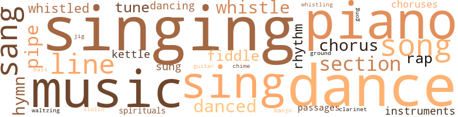
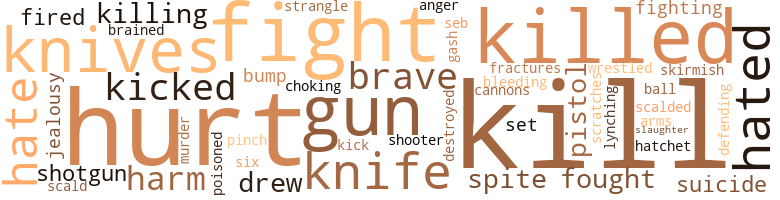

Under the Cottonwood: A Saga of Negro Life in Which the History, Traditions and Folklore Are Vividly Portrayed, by Graham, Katheryn Campbell (1941)
198 music-related terms matched in this text.
Most frequent terms in this topic: singing (19); piano (15); music (15); dance (14); sang (13)
banjo.n.01
Definition: a stringed instrument of the guitar family that has long neck and circular body
| word | sentence |
|---|---|
| banjo | That night they had a big fish fry and ice cream supper ; Mose , the banjo picker , was there and they danced until daybreak . |
bass.n.07
Definition: the member with the lowest range of a family of musical instruments
| word | sentence |
|---|---|
| bass | Mr. Gillum 's big bass horn roared above all the other instruments . |
chime.n.01
Definition: a percussion instrument consisting of a set of tuned bells that are struck with a hammer; used as an orchestral instrument
| word | sentence |
|---|---|
| chime | We got duh chime bones , uh flitch uv baken an ' all duh chittlin 's an ' livers an ' lights . |
chorus.n.01
Definition: any utterance produced simultaneously by a group
| word | sentence |
|---|---|
| chorus | Cap'n , " they answered in chorus . |
| chorus | Those present joined in the chorus . |
| choruses | Professor Buford was a musician and he sent for many beautiful choruses for this class , as most of them had good voices . |
| chorus | The big chorus of over a hundred voices sang beautifully and the speakers were extra good that year . |
| choruses | Such a feast was out of order without a program : Solos , duets and choruses came in their turn , but who could dance ? |
| chorus | " Dat 's nothing , gal , " the old sisters drawled out in chorus . |
| chorus | Surely enough , two brothers who wanted the third one in the chorus , checked up on Don . |
clarinet.n.01
Definition: a single-reed instrument with a straight tube
| word | sentence |
|---|---|
| clarinet | The saxaphone 's weird notes , and the tricky combinations of the clarinet forced some of the farmers to get up from their beds and come to see who and what it was . |
dance.n.01
Definition: an artistic form of nonverbal communication
| word | sentence |
|---|---|
| dances | Ah use to play duh fiddle fuh dances miles uh ' round . |
| dances | We had uh good time at our quarters nearly uv ' ry Sadday night ; in duh summer , we had dances , an ' niggers frum other plantations would slip off an ' come over . |
| dances | We had two uh three big dances uh yer . |
| dance | It done vary well at our Christmas dance , but at ou , r summer dance when we got hot , dem merlasses run down our backs , in our faces , an ' in uv ' ry derection . |
| dances | They had a good time Saturday nights , for they would have fish fries or dances . |
| dance | His club gave a dance and he invited Mamie . |
| dance | The following Friday night , Mrs. Price invited the graduating class to a dance at her farm . |
| dance | The preacher had been by , and said some of the deacons had told him about the dance , and he was going to turn all of his members out of church , as it was against the rules and regulations of a Baptist church for its members to go to a dance . |
| dance | The preacher had been by , and said some of the deacons had told him about the dance , and he was going to turn all of his members out of church , as it was against the rules and regulations of a Baptist church for its members to go to a dance . |
| dances | He used to play for dances and he could n't see any harm in it as long as the young folks had some old heads along . |
| dance | On arriving at Freed University , a complimentary and inquisitive teacher informed them that she 'd been there for years and had discovered that all Texas students could do one of three things well : Sing , play the piano , or dance . |
| dance | She knew it was easy for piano-players to get acquainted and she knew too , that Tom would just as soon sit up all night and play for a dance and stay through part of the next day if the dance continued - too good natured to say " No . " |
| dance | She knew it was easy for piano-players to get acquainted and she knew too , that Tom would just as soon sit up all night and play for a dance and stay through part of the next day if the dance continued - too good natured to say " No . " |
| dance | A club had an elaborate dance for visitors . |
| dance | She had hoped to be able to get a peek at the first three on the list , so at the dance she met the beautiful ladies , and at the Fairground the next day she saw the fine horses . |
| dance | The program ended with a dance in the dining room . |
dance.v.02
Definition: move in a pattern; usually to musical accompaniment; do or perform a dance
| word | sentence |
|---|---|
| dancing | Because of their lateness to meals , the matron took the girls ' Saturday night dancing privilege from them . |
dance.v.03
Definition: skip, leap, or move up and down or sideways
| word | sentence |
|---|---|
| dancing | You could tell a whole love tale to your best girl while dancing one piece . |
| danced | In the green fields that extended for miles , he saw hundreds of slaves chopping cotton and each head was keeping time with the hoe as it danced in a rhythmic swing between the stalks . |
| dance | Jake took the old fiddle from the wall , eyed it as he put it gently in his lap , and continued , " I ' se played dis ole fiddle at meny uh dance an ' he give me dull money , an ' Mammy , Ah brung hit nearly all tuh you . |
| danced | The barefooted children danced the possum drag and other familiar steps in the middle of the street . |
| danced | We danced by duh light uv duh moon . |
| dance | We 'd sweep duh dirt flo ' an ' he 'd dance all over it . |
| danced | That night they had a big fish fry and ice cream supper ; Mose , the banjo picker , was there and they danced until daybreak . |
| dance | He did n't know she could dance so well ; she could even make the run , when two-stepping or waltzing . |
| danced | They ate awhile and danced awhile . |
| danced | Mamie danced over every inch of space they allowed her . |
gong.n.01
Definition: a percussion instrument consisting of a metal plate that is struck with a softheaded drumstick
| word | sentence |
|---|---|
| gong | The men stretched out on the long porch and harmonized until the old gong was sounded . |
grind.v.04
Definition: dance by rotating the pelvis in an erotically suggestive way, often while in contact with one's partner such that the dancers' legs are interlaced
| word | sentence |
|---|---|
| ground | Most people ground their own coffee . |
guitar.n.01
Definition: a stringed instrument usually having six strings; played by strumming or plucking
| word | sentence |
|---|---|
| guitar | Tom picked a guitar and Clem remembered the Bible verses . |
hymn.n.01
Definition: a song of praise (to God or to a saint or to a nation)
| word | sentence |
|---|---|
| hymns | One night when duh meetin ' wuz hot an ' sister Liza wuz singin ' one uv her good ole hymns , Ed come uh runnin ' an ' told us dem Night Riders wuz uh comin ' . |
| hymns | After a prayer and two hymns , the funeral procession was on its way to the graveyard that morning at io o'clock . |
| hymns | After two hymns and a prayer , Elder Rivers took his text from II Timothy 4-7 as Mamie had requested . |
| hymn | At the singing of a hymn , Mr. Garner and three other men lowered the casket into the grave . |
| hymn | Elder Rivers dismissed them with one verse of a hymn and a short prayer . |
jig.n.01
Definition: music in three-four time for dancing a jig
| word | sentence |
|---|---|
| jig | We 's got one hog an one jig , jes could n't feed no mo ' . |
kettle.n.04
Definition: a large hemispherical brass or copper percussion instrument with a drumhead that can be tuned by adjusting the tension on it
| word | sentence |
|---|---|
| kettle | Since the feet were as stiff as boards , he had made a red-hot fire under a big black iron wash kettle and dumped the socks into boiling water , seasoned with strong lye soap . |
| kettle | They could n't find the old wash bench , the tubs , or black iron kettle ; they too were completely covered . |
music.n.01
Definition: an artistic form of auditory communication incorporating instrumental or vocal tones in a structured and continuous manner
| word | sentence |
|---|---|
| music | As they were singing their closing number , a devout old sister came in late , and pranced down the aisle keeping time to their music . |
| music | Moster made money off 'n him ; we made his music by singin ' an ' pattin ' . |
| music | Ah jes ' loved any kind uv music . |
| music | All duh slaves in duh quarters tol ' me dat duh devil wuz goin ' tuh fix me ef Ah kep ' it up , 'cause it wuz duh devil 's music piece . |
| music | When the music started the man waiter walked wid Suzie and the woman waiter walked wid me . |
| music | Professor Buford , a handsome man , stood on the front steps tapping a bell , keeping time to the music . |
| music | She tried with perceptible hesitation to explain that she could n't play the wedding march without the music , and no one had told her to bring it , but Mrs. Harris not only insisted , but pulled the timid girl up from her seat and escorted her to the piano and commanded her to play . |
| music | The bride came switching through the door smiling , with chin up , leaning coquettishly on her brother 's arm , and the stocky groom , with his face knotted as if he recognized the music , supported by a friend , whisked through another door . |
| music | People for miles around heard the music . |
| music | The music was grand and the girls and boys swayed their young bodies accordingly . |
| music | Mamie told them to give her some good " stop-time music " with hand and foot patting and she 'd do the rest . |
| music | She rounded up a crowd of girls , and went in the music room on the first floor and started a lively tune . |
| music | Some went grumbling to their rooms , while others followed Nell on the second floor to another music room . |
| music | Uncle Jake loved music , and often spoke of the old songs . |
| music | On the corner at Green 's drug store , the music was going , and dizzy bodies were swaying to its rhythm . |
musical_instrument.n.01
Definition: any of various devices or contrivances that can be used to produce musical tones or sounds
| word | sentence |
|---|---|
| instruments | When little Mamie returned with the other instruments , Aunt Hannah caught up a small amount of hair in the mole of Joe 's head , pulled it up and wrapped the string several times around it and tied it tightly . |
| instruments | Mr. Gillum 's big bass horn roared above all the other instruments . |
passage.n.06
Definition: a short section of a musical composition
| word | sentence |
|---|---|
| passages | It seemed whenever the passages were easy and musical , he liked them too , and often read all the beautiful parts and left the difficult passages for his students . |
| passages | It seemed whenever the passages were easy and musical , he liked them too , and often read all the beautiful parts and left the difficult passages for his students . |
piano.n.01
Definition: a keyboard instrument that is played by depressing keys that cause hammers to strike tuned strings and produce sounds
| word | sentence |
|---|---|
| piano | Fred went in and began playing on the old box piano . |
| piano | Saul had bought it for Ellen and little Mamie ; it was the only piano in the neighborhood . |
| piano | Every morning after breakfast , she would go into the parlor , play the piano , and sing to the wounded soldiers who were convalescing in her spacious home . |
| piano | He tried to steady himself , but his grief was too weighty ; he let his crutch fall to the floor and leaned on the old black box piano and wept bitterly . |
| piano | He then gave a big tap by letting the clapper fall hard against the side of the bell ; the piano also gave a chord . |
| piano | She tried with perceptible hesitation to explain that she could n't play the wedding march without the music , and no one had told her to bring it , but Mrs. Harris not only insisted , but pulled the timid girl up from her seat and escorted her to the piano and commanded her to play . |
| piano | Tom wished for a piano so he could play the " Memphis Blues . " |
| piano | They told the gang about his piano playing , so when he left them , he 'd spent most of his change and the little that Mamie had given him to keep for her . |
| piano | On arriving at Freed University , a complimentary and inquisitive teacher informed them that she 'd been there for years and had discovered that all Texas students could do one of three things well : Sing , play the piano , or dance . |
| piano | The committee , consisting of two boys , struck up a lively conversation ; then the one seated at the piano began playing familiar songs . |
| piano | I want you to hear her play the piano ; Mamie says she can whistle too . " |
| piano | He had them to take off their coats , then escorted them in the front room and asked Donna to play on the baby-grand piano he 'd bought years ago . |
| piano | " Why that girl even sits at the piano like she means business , and I like that . |
| piano | " Donna , you 've played the piano beautifully , and Mamie has played and you whistled two lovely numbers for me . |
| piano | " Pappy , that 's a steam piano ; the teacher said so , " Lena shouted gleefully . |
pipe.n.04
Definition: a tubular wind instrument
| word | sentence |
|---|---|
| pipe | Will you lend me your new pipe stem so I can blow them up ? " |
| pipe | Poor Ellen was afraid to go in the house , for well did she know that her father would keep her dodging behind the kitchen stove pipe as he tried to hit her with his cane until one of her brothers came to her rescue . |
| pipe | He then took Uncle Jake 's strong pipe and blew warm smoke in her ear and stuffed it with cotton . |
| pipe | Tony , the chunky little gin hand , jumped into Jake 's wagon , unhooked the big black pipe and with it sucked all the cotton out of the wagon . |
| pipe | He then put the pipe into Abe 's wagon and the same process followed . |
| pipe | Sam , always obedient , sharpened his knife on the back of the stove pipe and started toward the old storehouse ; Mamie ran after him crying : " Please , Uncle Sam ; please do n't do it . |
| pipes | " This is the las ' uv it , childrun ; when de ole kalio pipes up , dat ' all , " drawled Jake . |
rap.n.05
Definition: genre of African-American music of the 1980s and 1990s in which rhyming lyrics are chanted to a musical accompaniment; several forms of rap have emerged
| word | sentence |
|---|---|
| rap | With morning came a gentle rap at the door . |
| rap | A heavy rap on the door caused all eyes to look in that direction . |
| raps | At four o'clock Christmas morning , the little community had awakened ; by five , heavy raps on doors or the cheerful shouting , " Christmas Give , " was heard outside . |
| raps | Late one night , heavy , deafening raps on the front door awakened Nancy . |
rhythm.n.04
Definition: the arrangement of spoken words alternating stressed and unstressed elements
| word | sentence |
|---|---|
| rhythm | Struggling hearts beat with another rhythm . |
| rhythm | The room was soon too crowded to turn in , but everyone swayed to the rhythm of the jazz in some way , until the matron came as usual and stopped the fun . |
| rhythm | On the corner at Green 's drug store , the music was going , and dizzy bodies were swaying to its rhythm . |
section.n.01
Definition: a self-contained part of a larger composition (written or musical)
| word | sentence |
|---|---|
| section | The weather turned cool sooner than they expected and heavy rains delayed transportation through that section . |
| section | Crops in that section of the South had been laid by , and the next day at every station , Negroes and poor whites awaited the arrival of every passenger train and swarmed inside , drinking up the ice water . |
| section | The subject of the next section was to be " Between Two Fires . " |
| section | The one and only fire-plug in the Negro section had n't been touched . |
| section | Anyway , the fire departments were trying to save homes in the wealthy section . |
| section | The first big blaze continued to sweep across the city from southwest to northeast , driven by a gale of wind that at times blew forty to fifty miles an hour , and included in it 's path the entire business district ; only a small part of the western section of the city was saved . |
| section | With a broad smile that lightened his face , he 'd walk or drive through the colored section and listen patiently to their complaints and tried as far as possible to make them happy . |
| section | As he turned to go into the Negro section , he struck dirt streets . |
sing.v.02
Definition: produce tones with the voice
| word | sentence |
|---|---|
| sing | On Sundays they 'd go to country churches , pose as preachers , then sing and preach a little , tell hard luck tales and take up a collection . |
| singing | As they were singing their closing number , a devout old sister came in late , and pranced down the aisle keeping time to their music . |
| singing | New life was in evidence ; the barns had been whitewashed , the flowers and trees were re-robing , the birds and chickens were singing noisily to their broods , and the new frisky colts and calves were exhibiting shiny colorful coats . |
| sings | That 's the way she sings ; all in ripples . " |
| sang | The women sang all the songs they knew as they worked ; Jennie , having a high soprano voice , led them . |
| sing | He wanted the children to sing for them , but he drove up to the gate a few minutes after four o'clock and the children were coming down the stairs . |
| sing | They liked to see him walk as much as they liked to hear him sing . |
| sang | He had a deep bass voice and often sang solos for his children . |
| sing | Duh white foks laked tuh hyer us sing an ' see us dance . |
| singing | This group of good natured happy folks entertained themselves by singing to and from the fields . |
| sing | Every morning after breakfast , she would go into the parlor , play the piano , and sing to the wounded soldiers who were convalescing in her spacious home . |
| sang | Whenever he played and sang his favorite tune , " Ah 'm My Mama 's Oldest Chile , Ah 'm too Young to Marry , Marry , " the old floor rocked and popped under its weight . |
| sang | He turned the scroll of his memory hack to where he first remembered his mother crying as she sang and tucked him in his little bunk filled with hay which served as a matress , and how he wondered why she always cried . |
| sung | At the grave songs were sung and the men folks took turns in filling up the grave . |
| sang | They sang two more good songs , and Elder Givins prayed and then preached a short sermon . |
| sing | He never had time to listen to a recitation , but would bring his friends down to see the children march in at recess or noon and to hear them sing . |
| sang | All the way out to the farm , the musicians played and the boys and girls sang ; the night was ideal . |
| sang | On the way back , they sang until everyone except the drivers fell asleep . |
| sang | The big chorus of over a hundred voices sang beautifully and the speakers were extra good that year . |
| sung | Mamie loved the Negro spirituals that were sung at chapel every day before noon . |
| sing | Many visitors came to hear the students sing . |
| sing | " You 'd better come over and join the Mozart Society , little girl ; I know you can sing , by the way you open your mouth , " said a kind , soft voice . |
| sing | All the way over to the Hall she repeated , " I know you can sing by the way you open your mouth . " |
| sang | During the last week , the girls sang gleefully as they packed for home . |
| sang | On the night before leaving , they gathered on Jorry Hall steps and sang spirituals and the few popular songs that were allowed . |
| sang | Many of the girls cried as they sang . |
| sing | He 'd been told that she could sing alto . |
| sang | Uncle Reb had been a good singer in his time , so whenever he came , they sang , if the spirit moved them . |
| sing | If anyone started to sing , he 'd stop to listen , and usually without the warning of a dinner or quitting bell , he 'd start for the wagon , announcing the hour to others - listless and slow ; but a better hearted man never lived . |
| sing | " Play that , and sing it . |
| sang | Little Sarah played and sang her number . |
singing.n.01
Definition: the act of singing vocal music
| word | sentence |
|---|---|
| singing | He was a chronic drunkard , and never joined the crowd until thoroughly stewed ; then he 'd come down the street gesticulating to them and staggering every step as his clear high voice rang out singing " Some Forty Years Ago . " |
| singing | Harry went on down Tremble Street singing and confessing . |
| singing | I do love good singing , " said Lena . |
| singing | It was n't long before those mosquitoes who had been singing , " cousin , cousin " , were far from the Cotton-wood tree and Mamie 's gang seated on the grass to hear stories and riddles . |
| singing | You could always hear good singing at his church and whenever the Spirit moved them the congregation shouted to their heart 's content . |
| singing | The singing of cotton pickers in the broad fields was strikingly impressive . |
| singing | As the crew worked , they kept time to their singing by a slight nod of the head , sway of the body , and with their fingers as they nimbly pinched the white locks from the pointed boles ; but Abe 's loud clear voice could be heard above them all as it floated like a white cloud through the crystal air . |
| singing | The waves and stops he made in singing " O Lord , What a Mornin ' " gave the birds in the neighboring woods a challenge . |
| singing | Aunt Hannah threw back her head and began singing , ' Before Ah 'd be uh slave , Ah 'd be buried in mah grave , an ' go home to mail Master an ' be free . " |
| singing | He got up singing and talking that morning , and after breakfast Peter Long , the barber , came over and gave him a haircut and shave . |
| singing | As Sam and Joe walked with their father down the aisle and sat with him on the front seat , Sister Lucy began singing . |
| singing | There was n't a dry eye when they began singing , " Oh , Carry Me to the Water '' and Uncle Jake was led down the ladder into the baptistry . |
| singing | Mr. Joe Stearns sent three hundred song books down as a gift to the children , as he had visited the school and enjoyed the singing . |
| singing | The bunch joined in the singing ; a short test followed . |
| singing | At the singing of a hymn , Mr. Garner and three other men lowered the casket into the grave . |
| singing | Just before going to the picture show one evening , Lena sat singing on the front porch in her big rocker . |
song.n.01
Definition: a short musical composition with words
| word | sentence |
|---|---|
| song | You know his thribin-toe song dat 's short an ' thumpity-bumpity . " |
| songs | The women sang all the songs they knew as they worked ; Jennie , having a high soprano voice , led them . |
| song | They 'd watch his mouth more than they listened to the song . |
| songs | A race that knew scarcely anything but sorrow , on hearing appealing scriptures and beautiful songs that touched on their past experiences or spoke of a brighter future for them , would naturally be moved to tears . |
| song | Long before he saw her , he had listened to her sweet voice in song while he was confined to his bed . |
| songs | At the grave songs were sung and the men folks took turns in filling up the grave . |
| songs | They sang two more good songs , and Elder Givins prayed and then preached a short sermon . |
| song | Mr. Joe Stearns sent three hundred song books down as a gift to the children , as he had visited the school and enjoyed the singing . |
| songs | The songs that year were beautiful . |
| songs | The committee , consisting of two boys , struck up a lively conversation ; then the one seated at the piano began playing familiar songs . |
| songs | On the night before leaving , they gathered on Jorry Hall steps and sang spirituals and the few popular songs that were allowed . |
| songs | Uncle Jake loved music , and often spoke of the old songs . |
| song | The favorite song in their repertoire was " The Bull Dog on the Bank and the Bull Frog in the Pool . " |
spiritual.n.01
Definition: a kind of religious song originated by Blacks in the southern United States
| word | sentence |
|---|---|
| spirituals | Mamie loved the Negro spirituals that were sung at chapel every day before noon . |
| spirituals | On the night before leaving , they gathered on Jorry Hall steps and sang spirituals and the few popular songs that were allowed . |
tune.n.01
Definition: a succession of notes forming a distinctive sequence
| word | sentence |
|---|---|
| tune | " Yas , yas , Mr. Weatherly , the waltzes now sound lak duh owl 's tune tuh me . |
| line | Just before two o'clock the long line of cabs were driven up to the gate and filled . |
| lines | He had arranged the children in two long lines , facing each other , but she asked to be in the one near High Street . |
| line | Mamie decided to take part in the concert and line up for the sham battle , but when all were busy lighting the fireworks , she 'd slip under the wire fence and run home . |
| tunes | Ah learnt uh few tunes . |
| tune | Whenever he played and sang his favorite tune , " Ah 'm My Mama 's Oldest Chile , Ah 'm too Young to Marry , Marry , " the old floor rocked and popped under its weight . |
| lines | In the morning , at recess and noon , the children formed long lines in the front yard . |
| lines | Their lines reached to the front gate . |
| lines | When the bell rang , the children were extremely noisy in getting to their lines and when they marched in , the peppy march Miss Landers played made them feel a bit lively . |
| line | As she said this last line she drew her hands as if shooting an arrow . |
| tune | She rounded up a crowd of girls , and went in the music room on the first floor and started a lively tune . |
| line | The bell rang , the children got in line ; but Rodney kept peeping . |
| line | Don , being the last in line , noticed that all the boys were sent into the same room . |
| line | After the speaking , a long line of them would afterwards shake hands with the speaker and try to comment on some part of the speech . |
| lines | A few weeks after the baby was born , Mamie wrote , these lines : Two Angels Two angels visited our home . |
violin.n.01
Definition: bowed stringed instrument that is the highest member of the violin family; this instrument has four strings and a hollow body and an unfretted fingerboard and is played with a bow
| word | sentence |
|---|---|
| fiddle | Jake took the old fiddle from the wall , eyed it as he put it gently in his lap , and continued , " I ' se played dis ole fiddle at meny uh dance an ' he give me dull money , an ' Mammy , Ah brung hit nearly all tuh you . |
| fiddle | Jake took the old fiddle from the wall , eyed it as he put it gently in his lap , and continued , " I ' se played dis ole fiddle at meny uh dance an ' he give me dull money , an ' Mammy , Ah brung hit nearly all tuh you . |
| fiddle | Ah use to play duh fiddle fuh dances miles uh ' round . |
| fiddle | With an ol' fiddle an ' two dollars in mah jeans , Ah 'm free . " |
| violin | He produced a handful of strings of all kinds for the violin and bass . |
waltz.v.01
Definition: dance a waltz
| word | sentence |
|---|---|
| waltzing | He did n't know she could dance so well ; she could even make the run , when two-stepping or waltzing . |
whistle.v.01
Definition: make whistling sounds
| word | sentence |
|---|---|
| whistle | Now it 's ' gainst duh law full him tuh whistle inside duh city limits ; he must go in duh woods . " |
| whistled | Happy-hearted again , Jake put both hands in his pockets and whistled all the way down to the bottom where a dozen or more men Were making sorghum and selling it for two-bits a gallon . |
| whistle | " Ah hyer 's Mr. Johnny 's whistle . |
| whistled | Few houses were under-pinned and the wind whistled all under them , blowing old pans and everything about . |
| whistling | The two weeks hastened by , and early the second Saturday morning , he found himself on his way to town , whistling with the birds that greeted him . |
| whistle | He could whistle . |
| whistle | The wind began a low whistle . |
| whistle | I want you to hear her play the piano ; Mamie says she can whistle too . " |
| whistled | " Donna , you 've played the piano beautifully , and Mamie has played and you whistled two lovely numbers for me . |
| whistle | I was wondering if you can accompany yourself and whistle , " said Mr. Joe . |
136 violence-related terms matched in this text.
Most frequent terms in this topic: kill (13); hurt (10); killed (7); fight (7); hated (6)
abrasion.n.01
Definition: an abraded area where the skin is torn or worn off
| word | sentence |
|---|---|
| scratches | Jake found little Saul at the back door of his shop , holding up his apron and pointing to his round brown " tummy " that had a few scratches on it . |
anger.n.01
Definition: a strong emotion; a feeling that is oriented toward some real or supposed grievance
| word | sentence |
|---|---|
| anger | His remarks were sharp and piercing , but she stood unmoved ; never did she show one sign of anger . |
bleeding.n.01
Definition: the flow of blood from a ruptured blood vessel
| word | sentence |
|---|---|
| bleeding | The doctor came and said he needed the bleeding ; afterwards he got well and strong . |
blister.v.02
Definition: subject to harsh criticism
| word | sentence |
|---|---|
| scalded | We have scalded duh bed wid boilin ' lye water , an ' we 've put coal-oil on dull mattruss , but it do n't do no good . |
brain.v.02
Definition: kill by smashing someone's skull
| word | sentence |
|---|---|
| brained | She could have just brained the little dumb cur . |
brush.n.06
Definition: a minor short-term fight
| word | sentence |
|---|---|
| skirmish | But in the skirmish he was tripped and his gun sailed against the pot-bellied stove in the corner . |
bump.n.01
Definition: a lump on the body caused by a blow
| word | sentence |
|---|---|
| bumps | She 's go die ; I 've never seen nobody covered from head to foot with so many bumps and she 's pregnant , too . |
| bump | If you do git well and have that baby , he 'll make a fine health doctor , because he can go among all kinds of bump diseases and wo n't take them . |
cannon.n.04
Definition: heavy automatic gun fired from an airplane
| word | sentence |
|---|---|
| cannons | Durin ' de war we heard cannons an ' guns , Moster did n't go ; he sont uh man in his place an ' tol ' him he 'd take kere uv his fam ' ly . |
cut.n.05
Definition: a wound made by cutting
| word | sentence |
|---|---|
| gash | The blood from the deep gash ran so fast they could n't stop it . |
destroy.v.04
Definition: put (an animal) to death
| word | sentence |
|---|---|
| destroyed | What a good time she and her grandpa had laughing and trying to figure out a good way to catch Jim , who had a good job in Cleartown , Washington , but his unsympathetic wife received all mail and destroyed it . |
draw.v.23
Definition: pull (a person) apart with four horses tied to his extremities, so as to execute him
| word | sentence |
|---|---|
| drew | He knocked both Jeffreys in a corner ; they drew up like frightened dogs and begged for mercy . |
| drew | The first load Sam drew up looked like puffy white clay . |
| drew | People leaning against it as they drew up the heavy bucket , that swung from side to side , pulled the planks apart . |
fight.n.02
Definition: the act of fighting; any contest or struggle
| word | sentence |
|---|---|
| fighting | The fellow who stands and looks on , gets as much as the fellows who do the fighting . |
fight.n.05
Definition: a boxing or wrestling match
| word | sentence |
|---|---|
| fight | I do n't know much ' bout the fight , only that Uncle Jake 's two boys wuz standing here drinking soda pop when the two Jeffrey boys come in and started cuttin ' on ' um . " |
| fight | Since Lillie had that fight with Sadie Smith and the gal nearly bit her finger off , she says she ca n't stay here . |
| fight | He stood , eyed Lucius , trying to see if he had any fight in him before speaking . |
| fights | " Do n't you know I do n't allow you to look at fights ? |
| fight | And Elder Rivers , I 'd like for you to preach from II Timothy , 4-7 , which reads , ' I have fought a good fight , I have finished my course , I have kept the faith . ' " |
| fight | He read it twice , " I have fought a good fight , I have finished my course , I have kept the faith . |
fight.v.02
Definition: fight against or resist strongly
| word | sentence |
|---|---|
| fighting | The children kept him fighting because they made fun of him . |
| fight | Uncle Jake and Sam put Beaumont oil around his pig pen , but some neighbors would n't use it , and he declared that was the reason they had to fight summer pests . |
| defending | " Mr. Gordon , Mr. Hal Smith has learned from military authorities the names of men who have been active in defending the state against secret enemies living in communities nearby , namely , the " Bushwhackers " and your name is among the number . |
| fight | Dat gal Lillie , is uh scrapper , she kin cuss , but she cai n't fight . |
| fought | Their wives did n't get along ; the brothers almost fought . |
| fought | And Elder Rivers , I 'd like for you to preach from II Timothy , 4-7 , which reads , ' I have fought a good fight , I have finished my course , I have kept the faith . ' " |
| fought | He read it twice , " I have fought a good fight , I have finished my course , I have kept the faith . |
fracture.n.01
Definition: breaking of hard tissue such as bone
| word | sentence |
|---|---|
| fractures | Mr. Stearns got the best doctor in town to attend Jake , but the best one knew very little about fractures . |
gag.v.06
Definition: cause to retch or choke
| word | sentence |
|---|---|
| choking | As they were enjoying the little fellow , a choking cry , followed by fast , jerky , muffled squalls from Annie 's room , announced the arrival of another newcomer . |
gun.n.01
Definition: a weapon that discharges a missile at high velocity (especially from a metal tube or barrel)
| word | sentence |
|---|---|
| gun | He loved his two children dearly when sober , but when tanked , he 'd try putting the boy in the well or else have his family running and hiding in neighbors ' houses as he looked for them with his shot gun . |
| guns | He had rabbits , squirrels , and opossums hanging at his sides and back , a string of fish in one hand and his guns fastened around his neck with a leather strap , and steadied with his right hand . |
| guns | She tol ' duh white folks dat all duh slaves on jinin ' plantations wuz fixin ' tuh rise up ' gainst ' um an ' dey wuz goin ' tuh steal hosses an ' guns an ' go jine duh Yankees . |
| guns | Durin ' de war we heard cannons an ' guns , Moster did n't go ; he sont uh man in his place an ' tol ' him he 'd take kere uv his fam ' ly . |
| guns | Ant Cora an ' Susie slept upstairs wid dem , an ' Ah had uh bunk in duh kitchen wid two guns . |
| gun | But in the skirmish he was tripped and his gun sailed against the pot-bellied stove in the corner . |
hate.n.01
Definition: the emotion of intense dislike; a feeling of dislike so strong that it demands action
| word | sentence |
|---|---|
| hate | Dair 's goin ' tuh be no peace in it till all dis hate is wiped out , fuh Acts 17-26 say somethin' lak dis : " Out uv one blood created He all races uv mankind to dwell on duh face uv duh earth . " |
hate.v.01
Definition: dislike intensely; feel antipathy or aversion towards
| word | sentence |
|---|---|
| hated | His daddy hated it but whut could he do ? |
| hated | Ah hated tuh see him go , but he had no business tuh promos uh gal he 's go take her somewhurs den git in bed . " |
| hate | I hate to bring your buttermilk out here ; you get it all in your moustache and whiskers . " |
| hates | She done dat , an ' Ah hates her tuh dis day . |
| hated | Oh , Ah hated dem things . |
| hate | I can love and I can hate . |
| hated | There was something always fascinating and tender about Don 's smiles , ' but she hated to admit it . |
| hated | Uncle Jake and the whole family hated for him to marry Lizzie ; she was ignorant and mean . |
| hate | He seemed to hate to have them leave . |
| hated | The children hated to miss school because the Board of Education had sent to Nashville , Tennessee for two good teachers . |
hurt.v.04
Definition: cause damage or affect negatively
| word | sentence |
|---|---|
| hurt | Some girls are so glib-mouthed and unladylike , and too , their words hurt so . |
injury.n.01
Definition: any physical damage to the body caused by violence or accident or fracture etc.
| word | sentence |
|---|---|
| harm | I ' see happy , my soul 's konverted and duh devil cai n't do me no harm . |
| hurt | They hung around nearly all day now , since the boys had gotten hurt . |
| hurt | She could n't conceive of a thing like that being carried out without someone getting hurt . |
| harm | " Now Lucy May , since I 've explained to you as best I know how , the harm of tobacco and snuff , I 'm sure you 're willing to quit . |
| hurt | Ah did n't want dem tuh hurt ole master uh ole mistruss , uh take dey things , but Ah wanted ' um tuh see it dat we wuz free . |
| harm | He used to play for dances and he could n't see any harm in it as long as the young folks had some old heads along . |
| hurt | I did n't stop to see how bad he wuz hurt ; I wuz too scared . " |
| harm | The doctors expected this , because they 'd always had trouble with such old women , so they told Mamie to go in to see her mother as often as she wished as it would do more harm not to go into the room . |
jealousy.n.01
Definition: a feeling of jealous envy (especially of a rival)
| word | sentence |
|---|---|
| jealousy | They never openly had any disputes , but a little jealousy crept in over their gardens ; each tried to produce the first vegetables of the season . |
| jealousy | Surely enough the neighbors admitted that his jealousy was justified ; one night when he went home , the children were crying because their mother had run away with a strange man . |
kick_back.v.02
Definition: spring back, as from a forceful thrust
| word | sentence |
|---|---|
| kicked | Last week when Zula had her baby she kicked him in the belly and he landed in the fireplace . |
| kick | Wiping his eyes he stumbled out : - " Why James , dat gal Zula is ez strong ez uh mule an her foot is ez big ez uh mule 's ; let her kick you an ' Ah 'll bet you wo n't be standin ' either . |
| kicked | Mr. Leslie kicked the mare lightly in the flank , as he waved good-bye to Uncle Jake . |
| kicked | Joe jumped and kicked as Aunt Hannah got a firm grip under his chin . |
| kicked | In the dark he pushed around in the slippery mud and , in scrambling to his feet , he kicked a gunny sack that rattled as if there were tin pans in it . |
| kicked | No sooner said than he swung himself back into the saddle , kicked the brindle steed furiously in the flanks and sped away to the next crowded camp . |
kill.v.10
Definition: cause the death of, without intention
| word | sentence |
|---|---|
| kill | Ef you kill uh black snake an ' hang it high , it 'll sho rain . |
| killing | Sam got up early and made things ready for killing hogs by breakfast . |
| killing | Uncle Jake was n't the only one in the neighborhood killing hogs . |
| killed | Who all killed hogs today ? " |
| killed | We do n't need to send meat to them that killed , de we pappy ? " |
| kill | She then filled small tin pans with scrap meat and sausage and sent them to neighbors who did n't kill that day . |
| kill | " It 's me , ole fightin ' Seb , I 'll kill you rats ; git out of this place right now . |
| kill | Cai n't see why dese Jeffreys tried tuh kill ' um . |
| kill | Dey 's uhnuf tuh kill me an ' duh boys too . |
| kill | He said dey foun ' sumpin ' tuh kill ' um , but it ruint duh cottun . |
| killed | Ah ' se killed many uh animal , an ' Ah 've heped clean ' um too . |
| kill | We 'd kill duh few hogs he had , an ' all we got wuz dull feets en heads - never hams . |
| kill | She skares duh wimmen so bad dat dey tries tuh kill her 'cause dey think he 's goin ' tuh kill dem . |
| kill | She skares duh wimmen so bad dat dey tries tuh kill her 'cause dey think he 's goin ' tuh kill dem . |
| kill | " Yes , Ah guess dese white foks will kill mah whole family , " groaned Nancy . |
| killed | People had little money , they killed hogs , had plenty of meat . |
| killed | One afternoon when coming from work in a rush to catch his Watts local , he forgot to look in both directions before crossing the tracks and was struck by an interurban red car and killed instantly . |
| killed | This shock greatly unnerved Saul 's wife ; she was his second wife , but he was her third husband , and each husband had been killed . |
| killed | Jake killed five and smoked the meat in his old corn crib . |
| kill | He 'd make a smoke of " Green Mountain , " put a sheet over his head and smoke himself ; the odor of that stuff was enough either to kill or to cure . |
killing.n.01
Definition: an event that causes someone to die
| word | sentence |
|---|---|
| killing | One day he had on new shoes and said they did n't hurt when bought , but they were now , " nigh killing " him . |
killing.n.02
Definition: the act of terminating a life
| word | sentence |
|---|---|
| kill | It 'll most nigh kill him ef you take him in dis fix , " pleaded Uncle Jake . |
| kill | Ah kin see dey 'll be hard things tuh kill . |
knife.n.02
Definition: a weapon with a handle and blade with a sharp point
| word | sentence |
|---|---|
| knives | We had our pocket knives sharp ez razors an ' we wasted no time in cuttin ' off duh right stirip from each saddle . |
| knives | Them Jeffreys is killin ' ' uni with long hooked knives ; give me a pallin off 'n that fence there . |
| knives | Mah boys do n't e ' um carry pocket knives . |
| knives | Run , take dese knives and rines in duh back fore he gits hyer . |
| knife | Ethel asked for two men 's handkerchiefs and a large dosed pocket knife . |
| knife | The crowd stood too close to her , but in a short while she succeeded in tying the knife against the girl 's leg in such a way that the blood stopped and little Hattie rested on a pallet until the doctor arrived . |
| knife | She has fastened the knife on a pressure point , and it checked the flow of blood . " |
| knife | She reached in the fork of the tree and got the butcher knife . |
| knives | On Saturdays , housewives sent their butcher knives for him to sharpen on the big grindstone . |
| knife | Sam , always obedient , sharpened his knife on the back of the stove pipe and started toward the old storehouse ; Mamie ran after him crying : " Please , Uncle Sam ; please do n't do it . |
| knives | It made her nervous to see them cut the winding vines from the frame racks with long jack knives . |
| knife | Men often remarked that he knew just where to put a knife to unjoint a hog . |
lynching.n.01
Definition: putting a person to death by mob action without due process of law
| word | sentence |
|---|---|
| lynching | This I 'm sure you have guessed was a lynching . |
malice.n.01
Definition: feeling a need to see others suffer
| word | sentence |
|---|---|
| spite | Ef he marries dat gal , he 's uh-doin ' it to spite one uv dem Jeffreys . |
| spite | The small crowded room of people were chatting merrily in spite of their condition . |
| spite | In spite of it all I got better , but as I lay watching them carry the boys out by twos and threes , it upset me . |
murder.n.01
Definition: unlawful premeditated killing of a human being by a human being
| word | sentence |
|---|---|
| murder | The day the trial was set , Saul sat in court all day , and they did n't have his trial ; the next day the sheriff led him into court again and the judge was trying a murder case . |
musket_ball.n.01
Definition: a solid projectile that is shot by a musket
| word | sentence |
|---|---|
| ball | His chain had a ball on the end . |
open_fire.v.01
Definition: start firing a weapon
| word | sentence |
|---|---|
| fired | Cai n't ' magine why he 's so all fired happy , a liar ; he 's headed dis way , we 'll soon find out . |
| fired | He grabbed his shotgun as he passed the wagon and , when they neared him , he fired into the foaming mouth of the beast that was ready to spring on the back of the pony . |
pain.v.02
Definition: cause emotional anguish or make miserable
| word | sentence |
|---|---|
| hurt | One day he had on new shoes and said they did n't hurt when bought , but they were now , " nigh killing " him . |
| hurt | - Oh doctor , how bad is dey hurt ? |
| hurt | " Pappy , noise do n't hurt little Mamie ; she 's playing ' hully-gull . ' |
| hurt | " Lay yo ' head on mah knee , chile ; now be still , do n't jump , it wo n't hurt ; it 'll feel lak dull medicine yo ' mama puts in it dat she got frum dull doctor . |
| hurt | They decided not to tell anyone , not even Sam , as it would hurt him too much . |
pinch.n.02
Definition: an injury resulting from getting some body part squeezed
| word | sentence |
|---|---|
| pinch | It 's thick an ' black an ' not too strong ; jes uhnuf pinch in it tuh satisfy . |
pistol.n.01
Definition: a firearm that is held and fired with one hand
| word | sentence |
|---|---|
| pistol | This sobered the man enough to remember his pistol , but Tom grabbed him by the nape of the neck and the seat of his baggy breeches and had him about out , when he squirmed around and threw a shiny pistol in Tom 's face . |
| pistol | This sobered the man enough to remember his pistol , but Tom grabbed him by the nape of the neck and the seat of his baggy breeches and had him about out , when he squirmed around and threw a shiny pistol in Tom 's face . |
| pistol | It was a glass pistol . |
poison.v.04
Definition: kill by its poison
| word | sentence |
|---|---|
| poisoned | Aunt Hannah had pyorrhea or some disease of the gums , but she declared a neighbor from whom she used to borrow snuff poisoned her . |
revolver.n.01
Definition: a pistol with a revolving cylinder (usually having six chambers for bullets)
| word | sentence |
|---|---|
| six-shooter | His conversations sometimes ended with his telling how he bluffed the big school boys with an empty six-shooter in his table drawer and a long six-foot pole lying across the table . |
scald.n.01
Definition: a burn cause by hot liquid or steam
| word | sentence |
|---|---|
| scald | " Go right ahead , Sam ; All 'll hobble out dair time you drag ' urn up tuh scald . |
shotgun.n.01
Definition: firearm that is a double-barreled smoothbore shoulder weapon for firing shot at short ranges
| word | sentence |
|---|---|
| shotgun | He was ever mindful of these girls ; many nights he sat up with a shotgun across his lap to protect them . |
| shotgun | He grabbed his shotgun as he passed the wagon and , when they neared him , he fired into the foaming mouth of the beast that was ready to spring on the back of the pony . |
sic.v.01
Definition: urge to attack someone
| word | sentence |
|---|---|
| set | Let 's set on duh porch , genermens . " |
| set | Ah lak wimmin wid long hair ; yo ' mammy could nearly set on her hair . |
slaughter.n.03
Definition: the savage and excessive killing of many people
| word | sentence |
|---|---|
| slaughter | He was a butcher and worked at the slaughter pen . |
staphylococcal_enterotoxin_b.n.01
Definition: a form of staphylococcal enterotoxin that has been used as an incapacitating agent in biological warfare
| word | sentence |
|---|---|
| seb | " Yas , Jake , dey had hard times fuh seb 'n long yers . " |
strangle.v.01
Definition: kill by squeezing the throat of so as to cut off the air
| word | sentence |
|---|---|
| strangle | He done it so much Ah lear n't tuh hol ' mah breath uh long time an ' it did n't strangle me . |
suicide.n.01
Definition: the act of killing yourself
| word | sentence |
|---|---|
| suicide | Sadie had been married to a fashionable gambler a few months and he had committed suicide on Lee Street . |
| suicide | Since there had n't been a suicide in the little town in five years , this was the topic of discussion . |
tomahawk.n.01
Definition: weapon consisting of a fighting ax; used by North American Indians
| word | sentence |
|---|---|
| hatchet | Little Hattie Barbour , a youngster about eight years , jumped up from the table to give her doggie a good bone , and fell on a hatchet that someone had carelessly left near their table . |
weapon.n.01
Definition: any instrument or instrumentality used in fighting or hunting
| word | sentence |
|---|---|
| arms | Duh men opened dey moufs , but duh cap'n flapped his heavy arms up an down , fellin ' ' um tuh hush . " |
weather.v.01
Definition: face and withstand with courage
| word | sentence |
|---|---|
| brave | " Elick crawled up to duh do ' , peeped in , an ' as he seed nobody , he got brave and stood up . |
| brave | A good brave slave was lef ' on uv ' ry plantation . |
| brave | When the services were over , many people shook his hand and congratulated him for his brave stand . |
| brave | Oscar was a brave little snipe and passed through the ordeal uncomplainingly . |
| brave | He discovered he was n't so brave after all . |
wrestle.v.01
Definition: combat to overcome an opposing tendency or force
| word | sentence |
|---|---|
| wrestled | He wrestled with himself as did Jacob with the angel ; finally he came to the conclusion that after all he alone was responsible for his soul , and right then and there he was converted and too , he had known some good preachers . |
189 religion-related terms matched in this text.
Most frequent terms in this topic: church (72); preacher (14); prayer (13); God (9); churches (8)
amen.n.01
Definition: a primeval Egyptian personification of air and breath; worshipped especially at Thebes
| word | sentence |
|---|---|
| amens | Rev. Hicks liked for folks to enjoy his sermons , and let him know it by some amens now and then , but Sister Charity went to the extreme . |
baptize.v.01
Definition: administer baptism to
| word | sentence |
|---|---|
| baptized | Uncle Jake was to be baptized . |
| baptising | " Grandpa , yesterday when we went to the baptising Aunt Julie got happy . |
blessing.n.05
Definition: the act of praying for divine protection
| word | sentence |
|---|---|
| blessing | Rev. Kelley asked the blessing and the hungry crowd began reaching for the barbecue , chicken , hocks , vegetables and all kinds of sweetmeats . |
| blessing | The mother had passed away a few months before the war and the children referred to her going as a blessing . |
| benediction | Each pronounced a benediction of " good luck " upon her because she was ever patient with old folks . |
chapel.n.01
Definition: a place of worship that has its own altar
| word | sentence |
|---|---|
| chapel | Mamie loved the Negro spirituals that were sung at chapel every day before noon . |
| chapel | She could n't even drink her coffee at breakfast , but at 10:45 she and her classmates were on their way to chapel . |
christian.n.01
Definition: a religious person who believes Jesus is the Christ and who is a member of a Christian denomination
| word | sentence |
|---|---|
| Christians | His mother and father were Christians . |
church.n.02
Definition: a place for public (especially Christian) worship
| word | sentence |
|---|---|
| churches | On Sundays they 'd go to country churches , pose as preachers , then sing and preach a little , tell hard luck tales and take up a collection . |
| church | It was a clear bright day and people had filled the church by 11 o'clock . |
| church | Son , Rev. Minter uv duh big Baptis ' church wuz hyer lookin ' fuh you . |
| church | " Reb is coming by after church an ' take us in his hack . " |
| church | Sunday 's church doings or the price of the bundle they happened to be carrying usually furnished the topic of discussion . |
| church | I jined church las ' night at duh revival . |
| church | Mr. Joe had sent word around that there would be a place for colored people to sit in church and carriages for all who wanted to go to the graveyard . |
| church | At the church the Sunday School room had been provided for Negroes . |
| church | Do you belong tuh church yit ? " |
| church | She worked in the church all her life . |
| church | When she got big enough to go to college , the church up there , sent her . |
| church | She do n't know nothing much but church concerts , sociables and picnics , and Joe likes that but the church folks is whispering about that a poor girl like that wo n't know how to act in a wealthy man 's house . " |
| church | She do n't know nothing much but church concerts , sociables and picnics , and Joe likes that but the church folks is whispering about that a poor girl like that wo n't know how to act in a wealthy man 's house . " |
| church | Ethel dismissed the children and helped Mrs. Thomas , a good old loquacious sister in the church , who was her landlady to spread her dinner . |
| church | Whenever we passed uh church uh school house an ' dey wuz havin ' uh picnic we allus stopped . |
| church | " Sister , Elder Brown is havin ' a rivival at his church . |
| church | I come fuh Ellen and Little Mamie to go to the church festibal . " |
| church | The sisters had three long tables in the yard in front of the church . |
| church | The large vacant space back of the church served as a playyard for the children , Ellen and the older girls led the games . |
| church | The program was to be inside the church , but afterwards a big sham battle was to take place on the outside . |
| churches | Surely enough , the work had given out ; they went every place , even to the small churches , but found nothing . |
| church | His little church was crowded every Sunday morning and night , and the people contributed freely ; many tithed . |
| church | You could always hear good singing at his church and whenever the Spirit moved them the congregation shouted to their heart 's content . |
| church | In dem days duh white foks went tuh church uv ' ry Sunday . |
| church | We knowed uv ' rythin ' , fuh somebody slept under dat church house uv ' ry Sadday night an ' listened on Sunday . |
| church | Mah mammy 's oldes ' gurl wuz sold an ' after freedom , we wrote letters back tuh Tennessee , an ' sont dem tuh duh Baptist church an ' Ah fount her . |
| churches | Lots an ' lots uv kinfolks is fount each other through churches . |
| church | Susie had to have a church weddin ' cause she 's been a little Sunday School girl all her life and her Grandma Zilphy raised her and the ole lady would n't stan ' fuh nothin ' else . |
| church | His church folks is ' bout reconciled ; she 's uh smart little trick , dey have to lak her . |
| church | Come in an ' set down Charidy , you ' se been tuh church , is you ? " |
| church | I always tries to go to church ev ' ry time duh do 's opun . " |
| church | I always sets there and see9 who pass duh church an ' do n't come in . |
| church | She went to church her first Sunday night in town and put a dollar on the collection table and cried when she shook the preacher 's hand so they knew she had changed . |
| church | Saul got a job at the brick yard and rented a house next door to one of Lillie 's church sisters . |
| church | Saul went to church every Sunday and took an active part in the Sunday School . |
| church | On THE FIRST Sunday in May the little Christian church was full before eleven o'clock . |
| church | Everybody joined in and the little church fairly rung . |
| church | He shouted and cried and talked from the time they led him into the baptisry until they took him out of the church to change his wet clothing . |
| church | She did n't like this , as her grandfather was getting along as well as some of the members who gave him ; and too , he had n't contributed regularly to this church and she felt they should n't make a sacrifice and give him anything . |
| church | The preacher had been by , and said some of the deacons had told him about the dance , and he was going to turn all of his members out of church , as it was against the rules and regulations of a Baptist church for its members to go to a dance . |
| church | She said she knew that was just big talk ; Mrs. Price raised more money for the church giving concerts , carnivals and picnics than all the other members put together , and she knew they were n't thinking of turning her out . |
| church | Mamie got Mrs. Price , a member of her church and one of the teachers , to help her . |
| church | A brother of the church saw a strange girl get off the train and went to assist her . |
| church | The Greers were anxious for the people to get inside the church , because they knew the sexton would toll that bell as long as he saw a person coming . |
| church | They had a good time going ' to church concerts and entertainments that were given that summer . |
| church | And last night when we went to church , Rev. Hodge told the members that he 'd leave if they paid him his two hundred dollars . |
| church | He nearly broke up church ; the people surely laughed . |
| church | Some sisters and the pastor of the church came down to help Mamie make arrangements for the funeral , but the truth was , they had made all arrangements before coming . |
| church | They had decided on the same day that Mamie had for the funeral but they wanted it to be at the church . |
| church | After listening to all they had to say , Mamie slowly commented , " You and I have decided on the same day , but the funeral ca n't be at the church . |
| church | You see , he felt that it was bad luck for a body to be carried to a church and then brought back by the house where it had expired . |
| church | Her grandpappy 's funeral should be at duh church . " |
| church | Lo , that big spark fell on top of a Methodist church and it was discharging sparks like a Roman candle . |
| church | Mamie did not like a big church wedding and if she had , she did n't have money enough to have one . |
| church | Just before going to the church , Mamie stood by the casket with her uncles , her mother looked so natural . |
| church | We promised tuh buy our feesh frum duh church stand tuhday . |
| church | " Brother Joe is very well satisfied with his church work . |
| church | The following Saturday night , Don and Mamie walked around , hoping to relive childhood experiences , and as usual , there were church suppers , both at the churches and in the front yards of some of the members . |
| churches | The following Saturday night , Don and Mamie walked around , hoping to relive childhood experiences , and as usual , there were church suppers , both at the churches and in the front yards of some of the members . |
| church | Mamie and Don made it around to four church suppers , chatted with , and treated many friends to refreshments . |
| church | Nancy stayed at the church stand . |
church.n.04
Definition: the body of people who attend or belong to a particular local church
| word | sentence |
|---|---|
| church | She stopped by duh church tuh hep decorate fuh duh sociable tuh morrer night . |
| church | That girl that come from up North to play the organ at church is got her cap set for brother Joe and by golly , he 's got his set for her too . |
| church | The church folks is jealous . |
| Church | " You go down Church Street an ' way out uh mung duh rich whites . |
| church | She had noticed that the barbed wire fence had been tied up , so people going to church could crawl under . |
| churches | The churches had Christmas trees for the children . |
| Church | At the Baptist Church on Christmas Eve night , presents for the children were hung on the tall cedar tree , and a big turkey dinner with all the trimmings was served Christmas day to its members . |
| church | The church wuz decorated wid red , white and blue paper and big sun flowers . |
| church | " No , she wuz n't Elder , but she passed by duh church when Sunday School wuz goin ' on . |
| church | He realized that his mother was leaving him and he was in his late sixties and had never joined church , hut she had had her name on the church roll since freedom and had kept herself in good and regular standing . |
| Church | The procession slowly made its way to Olive Baptist Church ; little Mamie expected them to turn north on Church Street after leaving Pine Bluff , but they turned Jordan , a street of lewd women and saloons . |
| Church | The procession slowly made its way to Olive Baptist Church ; little Mamie expected them to turn north on Church Street after leaving Pine Bluff , but they turned Jordan , a street of lewd women and saloons . |
| church | This little church had communion every Sunday . |
| churches | Professor Buford belonged to one of the small Methodist churches , he loved it and gave not only his time but his money . |
| church | The preacher had been by , and said some of the deacons had told him about the dance , and he was going to turn all of his members out of church , as it was against the rules and regulations of a Baptist church for its members to go to a dance . |
| church | No one came to the station to meet her , but the town being small , and it having been announced at church that Sister Lena 's daughter was coming from college , she had no trouble . |
| Church | The parents secured the Green Hill Methodist Church , as it was n't used very much . |
| churches | The old frame school building had burned , the new stucco that had been under construction during the summer had not been completed , and they were teaching in the churches . |
| church | No Baptist church is kot yit . " |
| churches | The little churches prayed night and day . |
| church | Come to the Methodist church at First and Main Streets at two o'clock Saturday . " |
| church | Dis is a festibul fuh our church . |
| church | They wondered why the mayor did n't get the principal of the High School , or the minister of the Baptist church - someone who could convey his message intelligently . |
| church | He had pastored the largest Baptist church in town , but had gotten too old for the work and thought best to retire . |
confession.n.05
Definition: the document that spells out the belief system of a given church (especially the Reformation churches of the 16th century)
| word | sentence |
|---|---|
| confession | He knew that he had been a good man and raised his children to love and fear God , yet before man he made no confession ; why was this ? |
curate.n.01
Definition: a person authorized to conduct religious worship
| word | sentence |
|---|---|
| pastor | His wife had been ill for weeks , so he came over and told the pastor and Professor Rucker that they 'd have to stop the noise . |
| pastor | Elder Bivens , a heavy set dark man with a magnanimous soul , was pastor of the flock . |
| pastor | At the same time his pastor slapped him on the back and said , " Don , she made a fine speech tonight , but no more than Penhook expected . '' |
| pastor | It might be the pastor , or some other minister . |
| pastor | Some sisters and the pastor of the church came down to help Mamie make arrangements for the funeral , but the truth was , they had made all arrangements before coming . |
| pastor | If she wants to carry out her grandpa 's wishes , I do n't think we should criticize her too much , " said the pastor moodily . |
doctrine.n.01
Definition: a belief (or system of beliefs) accepted as authoritative by some group or school
| word | sentence |
|---|---|
| isms | After his wife died , he tried to demonstrate his youth by running most of the time , especially when he passed the bushy cotton-wood where the old men with rheumatism and other isms were sitting . |
eden.n.01
Definition: any place of complete bliss and delight and peace
| word | sentence |
|---|---|
| heaven | She had been a good old woman , so Elder Dumas soon preacher her to heaven and the procession made its way to the old Benevolent graveyard . |
god.n.03
Definition: a man of such superior qualities that he seems like a deity to other people
| word | sentence |
|---|---|
| God | Dey thought God wuz uh punishin ' ' um . |
| God | Free , free , thank God O'mighty , free at last . '' |
| God | Sich uh day ez dis , he 'd come out in de fiel ' ridin ' uh big grey mare , holdin ' uh umbreller over him ; but God o ' mighty , he 'd make you work lak hell . |
| God | At work , at duh table , uh in bed , Ah prayed tuh Almighty God tuh hyer duh prayers uv mah uh-pressed people . |
| God | Many uh night Ah crawled out mah bunk an ' prayed till nigh day an ' Ah knowed mah God would hyer an ' ansuh duh prayers uv uh ole preacher . |
| God | George moved into the country on a small farm out from Dallas and was happy again as he read the word of God to his little family . |
| God | If a person 's heart was right and God knew it , that was enough . |
| God | I know now as I 've always known that ' There is a God ' , " she said to herself . |
| God | She went to the old well four or five times on a hot day to get them cool water , and passed each person two or three gourds full ; they 'd stick out their trembling tongues , smack their lips vigorously , and make loud scraping throat noises and say - " Ah , dat 's good and cool , chile , thanky , " or " Dat 's duh bes ' water in town , gim me uh nudder one , honey - yas , God bless you . " |
godhead.n.01
Definition: terms referring to the Judeo-Christian God
| word | sentence |
|---|---|
| Almighty | At work , at duh table , uh in bed , Ah prayed tuh Almighty God tuh hyer duh prayers uv mah uh-pressed people . |
| divines | Such carrying on among the divines was just too much . |
grace.n.05
Definition: (Greek mythology) one of three sisters who were the givers of beauty and charm; a favorite subject for sculptors
| word | sentence |
|---|---|
| Grace | The first night they were there , Grace had a party for them ; every day was full . |
hell.n.01
Definition: any place of pain and turmoil
| word | sentence |
|---|---|
| hell | He never left the crowd without informing them that hell was only a half mile away , and that Johnson grass and his lodge were taking the world . |
hymn.n.01
Definition: a song of praise (to God or to a saint or to a nation)
| word | sentence |
|---|---|
| hymns | One night when duh meetin ' wuz hot an ' sister Liza wuz singin ' one uv her good ole hymns , Ed come uh runnin ' an ' told us dem Night Riders wuz uh comin ' . |
| hymns | After a prayer and two hymns , the funeral procession was on its way to the graveyard that morning at io o'clock . |
| hymns | After two hymns and a prayer , Elder Rivers took his text from II Timothy 4-7 as Mamie had requested . |
| hymn | At the singing of a hymn , Mr. Garner and three other men lowered the casket into the grave . |
| hymn | Elder Rivers dismissed them with one verse of a hymn and a short prayer . |
jew.n.01
Definition: a person belonging to the worldwide group claiming descent from Jacob (or converted to it) and connected by cultural or religious ties
| word | sentence |
|---|---|
| Jew | Ah wuz uh gret han ' tuh play uh Jew 's - harp . ' |
| Jew | It scairt me so , Ah jes ' knowed it wuz duh devil , so Ah jumped off 'n dat box an ' throwed dat Jew 's - harp so fur out dat do ' it nuver could be fount . |
messiah.n.01
Definition: any expected deliverer
| word | sentence |
|---|---|
| Christ | for we shall all stand before the judgement seat of Christ . " |
| Christ | If people tried to walk in the footsteps of Christ as did Mr. Joe , truly , this would be a world of happiness and plenty because prejudice and everything akin to it will destroy or disrupt a great people or nation . |
prayer.n.01
Definition: the act of communicating with a deity (especially as a petition or in adoration or contrition or thanksgiving)
| word | sentence |
|---|---|
| prayer | After a prayer and two hymns , the funeral procession was on its way to the graveyard that morning at io o'clock . |
| prayer | The most beautiful picture to him was where she got on her knees and said the prayer . |
| prayers | At work , at duh table , uh in bed , Ah prayed tuh Almighty God tuh hyer duh prayers uv mah uh-pressed people . |
| prayers | Many uh night Ah crawled out mah bunk an ' prayed till nigh day an ' Ah knowed mah God would hyer an ' ansuh duh prayers uv uh ole preacher . |
| prayer | Her mother , in the state of Washington , could n't be present , but she sent up a prayer . |
| prayer | This was time for earnest prayer , not idle tears . |
| prayer | As she sat down at her table this night with many perplexing questions before her , her head fell on two clasped hands and she sent up a silent prayer . |
| prayers | They worked as if nothing had happened , but silent prayers were being sent up to their Maker . |
| prayer | After two hymns and a prayer , Elder Rivers took his text from II Timothy 4-7 as Mamie had requested . |
| prayer | Elder Rivers dismissed them with one verse of a hymn and a short prayer . |
| prayer | The little town attributed this to prayer ; all the boys who had graduated , or attended a college , returned . |
| prayer | As she stood there thinking of the prayer her mother had always prayed , " Lord , please let me live to see my little Mamie old enough to take care of herself " - her mother slowly opened her eyes , though at first she seemed to be peering through a fog , then her eyes blinked fast as she stared at Mamie . |
| prayer | When the news was broken gently to Mamie , she fell on her knees and sent up a silent prayer . |
prayer.n.04
Definition: a fixed text used in praying
| word | sentence |
|---|---|
| prayer | I had n't finished my prayer . " |
| prayer | " He answered my prayer . " |
| prayer | Often when she came running almost out of breath and handed one his small parcel of tobacco she would hear two or three of them sending up a sentence prayer . |
preacher.n.01
Definition: someone whose occupation is preaching the gospel
| word | sentence |
|---|---|
| preachers | Uncle Jake often made Uncle Clem tell of their experiences as country preachers . |
| preachers | On Sundays they 'd go to country churches , pose as preachers , then sing and preach a little , tell hard luck tales and take up a collection . |
| preachers | When she looked up , both hands went over her head , " Deacons " , she screamed , " Dese ai n't no preachers , Ah know dese boys . " |
| preacher | Las ' night the mourners bench wuz full ; the preacher that wuz hepin ' went on the outside and tried to git all the foks dat wuz hangin ' in the winders to come in . |
| preacher | Duh nearest purson tuh stay all night wuz uh cullerd preacher , Rev. Miles . |
| preacher | Ramon wuz our preacher . |
| preacher | Dey heard dat he let his white preacher preach tuh us . |
| preacher | Yas he did , but whut did dat lyin ' preacher say . |
| preacher | Ah kin see dat preacher now an ' his fo ' sons in bed-tickin suits . |
| preacher | One of my legs started tremblin ' , I don ' know which 'n now an ' the mo ' I tried to steady it , the mo ' it shook , and too , Uncle Jake , I ' se been uh slippin ' roun ' uh little wid Zula , you know how tough that gal is and I heard she wuz goin ' to reject when duh preacher axed if anybody had any rejections ; now you kin imagin the fix I wuz in . " |
| preacher | " When the preacher finally said ' If anybody rejects , speak now uh forever hold yo ' peace ; I nigh fainted ; sweat rolled off me lak a bucket uv water had been pitched on my head , an ' it seemed to me that he wuz goin ' to wait ferever ; ever secon ' I ' magined I heard Zula yell out . |
| preacher | When that preacher started talking again I sho ' wuz a glad nigger . |
| preachers | The only excuse he could give was the disgusting , rotten preachers . |
| preachers | He wrestled with himself as did Jacob with the angel ; finally he came to the conclusion that after all he alone was responsible for his soul , and right then and there he was converted and too , he had known some good preachers . |
| preacher | She had been a good old woman , so Elder Dumas soon preacher her to heaven and the procession made its way to the old Benevolent graveyard . |
| preacher | She went to church her first Sunday night in town and put a dollar on the collection table and cried when she shook the preacher 's hand so they knew she had changed . |
| preacher | The preacher had been by , and said some of the deacons had told him about the dance , and he was going to turn all of his members out of church , as it was against the rules and regulations of a Baptist church for its members to go to a dance . |
| preacher | Mamie heard slew-foot Minnie say , " Sump 'n sho wrong wid dis preacher and his members . |
| preacher | I wanted to say something , but no one , not even the preacher noticed it . |
religion.n.01
Definition: a strong belief in a supernatural power or powers that control human destiny
| word | sentence |
|---|---|
| faith | Had he not maintained his faith in God , he would have become a raving maniac . |
| religion | After such confusion he thought the children 's minds were far from religion , so he changed the subject . |
| faith | And Elder Rivers , I 'd like for you to preach from II Timothy , 4-7 , which reads , ' I have fought a good fight , I have finished my course , I have kept the faith . ' " |
| faith | He read it twice , " I have fought a good fight , I have finished my course , I have kept the faith . |
saint.n.02
Definition: person of exceptional holiness
| word | sentence |
|---|---|
| Angels | A few weeks after the baby was born , Mamie wrote , these lines : Two Angels Two angels visited our home . |
| angels | A few weeks after the baby was born , Mamie wrote , these lines : Two Angels Two angels visited our home . |
| angel | But within seven score days Another angel garbed in a snow white robe Came , and brought a soul . |
satan.n.01
Definition: (Judeo-Christian and Islamic religions) chief spirit of evil and adversary of God; tempter of mankind; master of Hell
| word | sentence |
|---|---|
| devils | As they went out of the door Clem heard the old sister screech , " You devils is go fall in duh jaws uv hell . " |
| devils | He said he heard the words , " You devils is go fall in duh jaws uv hell . " |
| devil | He just knew he was falling in hell ; the place even felt hot and he expected the devil to come up to him . |
| devils | " Ah jes knowed Mr. Weatherly wuz too good uh man tuh ' blong tuh dem Night Rider devils . |
| devils | Two dozen uh mo uv dem devils on big fine hosses come uh ridin ' up an ' jumped off at duh do ' . |
| devil | One day I doubled back and caught him in my house , and I give him a devil of a good beatin ' and then swung the first train out of there and went to Cado . |
| devil | I ' see happy , my soul 's konverted and duh devil cai n't do me no harm . |
| devil | All duh slaves in duh quarters tol ' me dat duh devil wuz goin ' tuh fix me ef Ah kep ' it up , 'cause it wuz duh devil 's music piece . |
| devil | All duh slaves in duh quarters tol ' me dat duh devil wuz goin ' tuh fix me ef Ah kep ' it up , 'cause it wuz duh devil 's music piece . |
| devil | It scairt me so , Ah jes ' knowed it wuz duh devil , so Ah jumped off 'n dat box an ' throwed dat Jew 's - harp so fur out dat do ' it nuver could be fount . |
sermon.n.02
Definition: a moralistic rebuke
| word | sentence |
|---|---|
| preaching | This ended their preaching . |
| sermons | Rev. Hicks liked for folks to enjoy his sermons , and let him know it by some amens now and then , but Sister Charity went to the extreme . |
| sermon | She began shouting early during his sermon and continued to the end . |
| sermon | After the services , the members came up front to shake hands with Rev. Hicks and compliment him on preaching such a soul-stirring sermon . |
| sermon | " You enjoyed my sermon ; I noticed you shouted most of the morning . |
| sermon | They sang two more good songs , and Elder Givins prayed and then preached a short sermon . |
| sermon | One Monday morning , he felt quite religious , having had a fiery sermon on Sunday , so he had his junior class turn to page 163 in an English book . |
| sermon | He had embarrassed them so much by answering a minister in the middle of his sermon . |
| sermon | Mamie remained until the sermon was half over ; she could stand no more . |
sin.n.06
Definition: violent and excited activity
| word | sentence |
|---|---|
| sins | Ah 've got atter him ' bout his sins full yers , but he would ' t pay me no min ' . |
temple.n.03
Definition: an edifice devoted to special or exalted purposes
| word | sentence |
|---|---|
| temples | All duh hair is out uv her temples . |
worship.n.01
Definition: the activity of worshipping
| word | sentence |
|---|---|
| worship | Many people fail to understand this and enjoy making fun of their worship . |